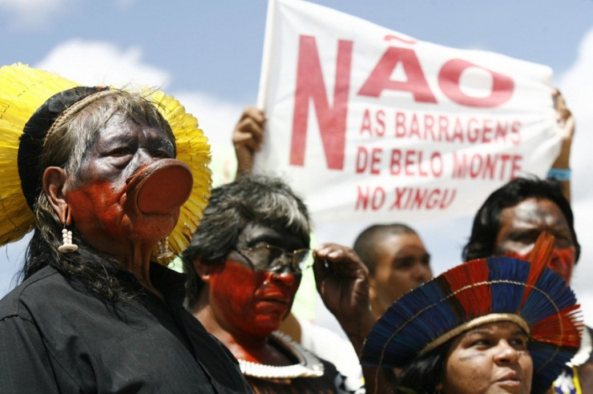

Defesa dos Territórios e Direitos Indígenas

Os povos do Xingu enfrentaram desafios enormes ao longo da história, incluindo invasões, exploração de recursos naturais e ameaças à sua autonomia. Mesmo diante dessas dificuldades, resistem para proteger suas terras, sua cultura e seus modos de vida. A demarcação do Parque Indígena do Xingu (PIX) em 1961 foi um marco histórico, mas a luta pela sua integridade territorial é contínua e se intensificou nas últimas décadas.
As Principais Ameaças ao Território
A maior ameaça à sobrevivência do Xingu provém do avanço do agronegócio e das atividades ilegais nas áreas limítrofes. O desmatamento e as queimadas no entorno do Parque são alarmantes, transformando a paisagem em um cenário devastado de monocultura de soja e pastagens. Esta devastação tem consequências diretas dentro da Terra Indígena:
- Contaminação dos Rios: O uso maciço de agrotóxicos nas fazendas vizinhas escoa para os rios que nascem fora do Parque, poluindo as águas que são vitais para a pesca, o consumo e os rituais das comunidades xinguanas.
- Exploração Ilegal: A invasão de madeireiros, garimpeiros e pescadores ilegais é uma constante, que não só rouba os recursos naturais, como também introduz doenças e violência nas aldeias.
- Grandes Obras de Infraestrutura: Projetos como hidrelétricas e rodovias na Bacia do Xingu afetam o regime hídrico dos rios, prejudicando a fauna aquática e os meios de subsistência dos povos.
Estratégias de Resistência e Articulação Política
As lutas dos xinguanos envolvem educação, política, proteção ambiental e reivindicação de direitos constitucionais. A resistência é organizada e multifacetada:
- Monitoramento Territorial: Os próprios indígenas atuam na vigilância das fronteiras do Parque, utilizando postos de guarda e, cada vez mais, ferramentas modernas como drones e sistemas de monitoramento via satélite (como o Sirad X, mantido por redes de apoio), para detectar e denunciar invasões.
- Organização Indígena: Associações como a ATIX (Associação Terra Indígena Xingu) reúnem os 16 povos do Alto Xingu, coordenando ações de proteção, saúde e educação, e garantindo uma voz unificada nas negociações com o governo e a sociedade civil.
- Ativismo e Comunicação: Líderes e jovens indígenas participam de debates nacionais e internacionais, em eventos como o Acampamento Terra Livre (ATL), mostrando ao mundo a importância de preservar territórios e culturas tradicionais. O uso de mídias e comunicação digital é uma tática crescente para furar o bloqueio da informação e mobilizar apoio.
Hoje, essa resistência se fortalece com a valorização do conhecimento ancestral, que guia o manejo sustentável da floresta, e com a aliança estratégica com ONGs e pesquisadores. Tradição e modernidade caminham juntas para garantir a sobrevivência e o futuro das comunidades do Xingu e de toda a Bacia Amazônica, da qual o Parque é um crucial corredor de áreas protegidas.